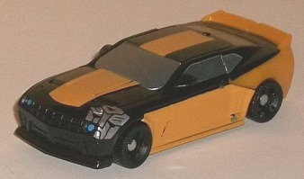 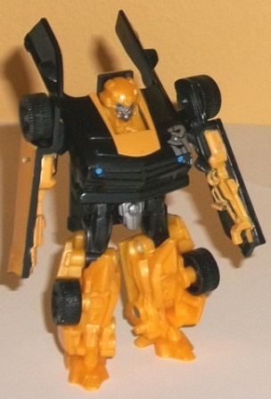
Allegiance : Autobot
Size : Legion
Difficulty of Transformation : Very Easy
Color Scheme : Black, glittery orangish yellow, yellow, light metallic silvery blue, and some silver and light sky blue
Individual Rating : 8.4
 "Ultimate
Gift Set" 5-pack (DotM) [Wal-Mart Exclusive]
"Ultimate
Gift Set" 5-pack (DotM) [Wal-Mart Exclusive]
Set Price : $30 U.S.
(NOTE: Because this set is composed of repaints,
this is not a full-blown review. This mainly covers any changes made to
the set and the color scheme, and merely compares it to the original versions
of these molds. For a review on the original DotM Legion Bumblebee, go
here
.
For a review on the original DotM Legion Crowbar, go
here
.
For a review on the original DotM Commander Optimus Prime, go
here
.
For a review on the original DotM commander Powerglide, go
here
.
For a review on the original DotM Legion Sideswipe, go
here
.)
 Bumblebee
Bumblebee
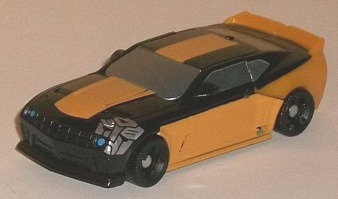
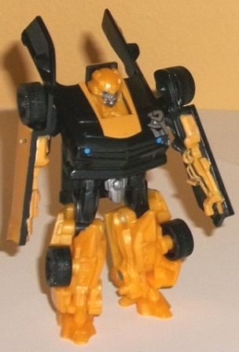
Allegiance
: Autobot
Size
: Legion
Difficulty of Transformation
: Very
Easy
Color Scheme
: Black, glittery orangish
yellow, yellow, light metallic silvery blue, and some silver and light
sky blue
Individual Rating
: 8.4
Bumblebee's color scheme
for this giftset isn't anything new, and in fact has
already
been done
for this mold already. This is a bit more of a variant of
the inverse "Stealth Bumblebee" color scheme, where there's more black
than yellow. The actual plastic layout is identical here to the individually-released
Stealth Bumblebee version of this mold, though the paint apps are a bit
different. Most noticeable is that Bumblebee now has one larger wide yellow
stripe going down the center of his vehicle mode compared to two smaller
thinner ones. There's also a large (comparatively) silver Autobot symbol
at an odd diagonal angle on the left side of his front grill, cut off where
it encounters the grill detailing abruptly. I rather like the odd, almost
"graffiti-like" placement of the symbol, but it should've been in a spot
where the whole symbol could've been put on the toy uninterrupted. Also
of note are that Bumblebee's yellow painted stripes on the sides are now
wider, reaching all the way down to the edge of the car sides/arm pieces,
and the shade of silvery blue used for his windows is ever-so-slightly
lighter than that used for the solo-release Stealth Bumblebee. His headlights
are also a really sharp light sky blue (lighter than on the solo-release
Stealth Bumblebee) and contrast well with the black; I wish it had been
used more to create a more unique scheme for this release, honestly. All
of Bumblebee's robot paint apps are the same as on the solo-release Stealth
Bumblebee.
No mold changes have
been made to this version of Bumblebee.
Crowbar
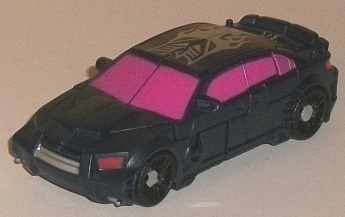
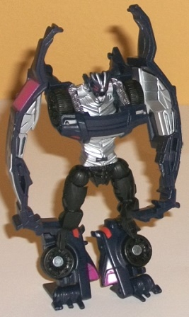
Allegiance:
Decepticon
Size
: Legion
Difficulty of Transformation
: Very
Easy
Color Scheme
: Very dark purple,
silver, hot pinkish purple, and some black and light red
Individual Rating
: 8.5
This version of Crowbar
takes his rather dull, mostly black original color scheme and pretty much
goes the exact opposite direction with his color scheme while still keeping
it dark. His main plastic color is now purple, though a shade of the color
that's so dark it's barely recognizable as purple; any darker and I would've
called it black. Obviously this means that it doesn't contrast that great
with Crowbar's few remaining black plastic pieces (mostly visible in robot
mode), but Crowbar's got some FANTASTIC paint apps in both modes that allow
him to break out of that realistic, mostly black color scheme and go into
a much more eye-catching area. In vehicle mode, he's got a really neat-looking
silver Decepticon emblem on his roof with flames coming out from behind
it-- it really adds more individuality to this version of Crowbar, but
on the negative side, if the tampos are just a TAD off from each other
on the two pieces that the roof splits into for the transformation, it
makes it quite obvious that the deco's not quite aligned with itself in
vehicle mode (as is the case with mine, unfortunately). There's also plenty
of silver paint on Crowbar's inner arms and chest in robot mode, so he
doesn't keep looking all-dark in that mode, either. His headlights and
taillights are also painted a light red, though the biggest change-- and
probably the one that will make most people decide whether they love or
hate this color scheme-- is the BRIGHT hot pinkish purple paint used for
Crowbar's vehicle windows. Me, I love it, as it contrasts excellently with
the dark purple while also complementing it a bit, and gives Crowbar an
almost "G2"-ish loudness in vehicle mode that will make him stand out on
any movieverse shelf.
No mold changes have
been made to this version of Crowbar.
 Optimus
Prime
Optimus
Prime
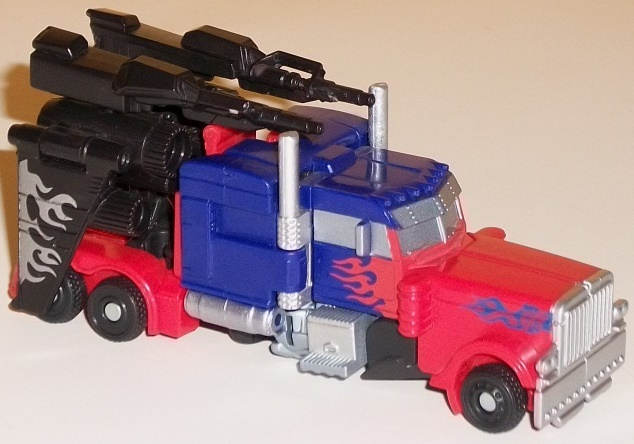
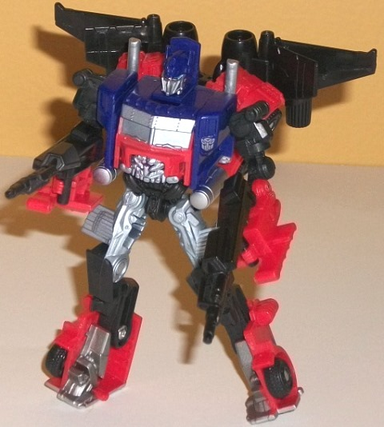
Allegiance
: Autobot
Size
: Commander
Difficulty of Transformation
: Easy
Color Scheme
: Moderately dark blue,
light red, black, silver, and some light metallic silvery blue
Individual Rating:
8.6
This fifth use of this
mold stubbornly refuses to get away from the basic same ol' movie Optimus
Prime color scheme. The general "feel" of this color scheme is overall
lighter in color than the other versions, overall, with a greater contrast
that makes it "pop" a little more. The dark blue is slightly lighter, though
the real change from the original release is the use of a rather light--
nearly fluorescent, in fact-- shade of red compared to the dark dull red
of the original. The silver paint used for Optimus' various "metal" bits
like the smokestacks and grill is a more straight silver compared to a
duller, gunmetal gray on the original, and this same silver paint is used
for the truck windows (but not Prime's eyes, oddly enough), compared to
the more window-like light silvery blue on the original. As far as paint
apps, this Optimus' paint locations are roughly the same as on the original,
with a couple of notable differences in regards to his signature flames.
First off, the amount of flames on his front nose are fewer in number,
but with a reverse-color Autobot symbol is in the "midst" of the flame
paint apps on both sides. This looks pretty cool, being blue where the
surrounding plastic is red and red where the flame paint apps "overlap"
it. There's also some silver flame paint apps on the wings of Prime's gun/weapons
backpack, and they help give that back end some needed flair-- overall
I wouldn't have liked the switch of the Prime's weapons pack to black,
but with the flames on it I think it edges out the original's gunmetal
gray, in my opinion, and contrasts well with the light red.
No mold changes have
been made to this version of Optimus Prime.
 Powerglide
Powerglide
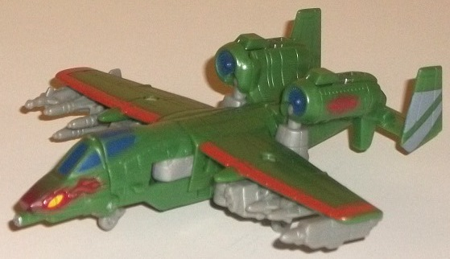
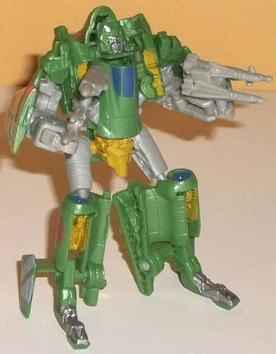
Allegiance
: Autobot
Size
: Commander
Difficulty of Transformation:
Easy
Color Scheme
: Moderately pale jungle
green, light milky gray, and some light red, gray, dark red, moderately
dark pale blue, light chalky yellow, light metallic silvery blue, and mustardy
greenish yellow
Individual Rating
: 8.0
Powerglide, on the other
hand, has an almost entirely different color scheme, with the major change
being that a rather pale shade of jungle green has taken the place of the
original's dark red parts. The light milky gray is still in the same areas
that it was on the original, though the brownish tint to it is gone, with
it being more of a straight gray this time. (I still find it boring either
way, unfortunately, and wish another color had been used in its place.)
To my knowledge, these colors aren't referencing anything specific, and
are simply a brand new color scheme for ol' Powerglide. These plastic color
changes aren't the only things different with Powerglide, though-- his
paint apps are considerably different. Though his face still looks the
same, his wings now have a light red lining to them that really contrasts
excellently with the pale green, and there's a few other decorative paint
apps that really help make this version of Powerglide look more attractive
visually than the original release of this mold. For one, his nosecone
has flame paint apps on the side of it, with yellow "eyes" painted in the
middle of these flames, making the nosecone look a bit like a snake head--
a pretty cool effect. The windows and turbines are also painted a moderately
dark blue, which goes with the pale green extremely well. The "Autobot
Air Force" symbols are now red and on the side of his turbines, and there's
also a few gray stripes on his rear wings-- this last one, though, is a
bit dull and doesn't provide enough contrast; I would've preferred either
having those paint apps in another color or using them somewhere else.
Finally, in robot mode on his waist and parts of his shoulders there's
a rather odd shade of mustardy greenish yellow, which honestly looks a
bit like mucus. I suppose it contrasts with the surrounding green and gray
colors well enough, but I wish a more straightforward yellow or another
color had been put in its place, even if this doesn't outright clash with
the other colors.
No mold changes have
been made to this version of Powerglide.
 Sideswipe
Sideswipe
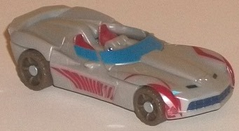
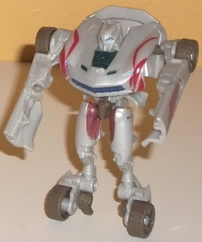
Allegiance
: Autobot
Size
: Legion
Difficulty of Transformation
: Very
Easy
Color Scheme
: Light milky gray,
and some moderately light metallic blue, dark dull brown, dull dark red,
red, and dark dull navy blue
Individual Rating
: 7.2
Sideswipe's colors for
this release are-- like Prime's-- more of a variant than an actual redeco
compared to his original. Technically, the plastic colors HAVE all been
changed-- the black wheels on the original release are now a dull brown,
and the light milky gray is just a BARELY noticeable shade lighter than
on the original release-- but it's still basically the same. Honestly,
plastic-wise, I think this version of Sideswipe is a little inferior--
the slightly more silver-y look of the gray plastic on the original looks
slightly better, and the dark brown tires don't look as good as black tires
unless you've got some "mud spray" paint apps around them, which this version
of Sideswipe does not. What makes this release of Sideswipe stand out the
most are the rather nifty tribal-like red paint apps in his vehicle mode,
featuring some neat striped designs on the car doors and around the front
wheels (with the design around the right front wheel having a similar "inverse-colored"
Autobot symbol design that this pack's Optimus Prime has). His vehicle
seats are also painted red, and combined with the slightly metallic shade
of blue used on his windows, makes for a more eye-catching vehicle mode
with more contrast and visual interest. Other, more minor, changes include
a bit of dark dull navy blue on Sideswipe's front grill and inner chest
piece, as well as dark dull red on the inside of his upper legs. They both
look alright, but slightly brighter shades of the colors would've helped
Sideswipe to pop a bit more visually in robot mode, and they're used in
so little amounts they don't contribute much to the color scheme anyways.
No mold changes have
been made to this version of Sideswipe.
If you don't have the original versions of DotM Cyberverse Sideswipe and Optimus Prime and are a fan of these small-scaled toys, than this set is a complete no-brainer. You don't really get much of a discount for buying all five in one pack, but all five have, in my opinion, superior decos to their mold's original releases, even if the difference is slight in some cases. None of the molds are bad for Cyberverse-scaled toys, either. However, if you have the "normal-colored" versions of either or both Optimus Prime and Sideswipe, I'd only get this set if you like more... well... colorful color schemes regardless of how realistic they are, as Prime and Sideswipe are both way too similar to their original releases color-wise for my taste to justify getting both versions of each. I wish they had embraced a full G2-esque set what with the deco jobs on Crowbar and Powerglide, but I guess 'twas not to be.
Reviews by Beastbot